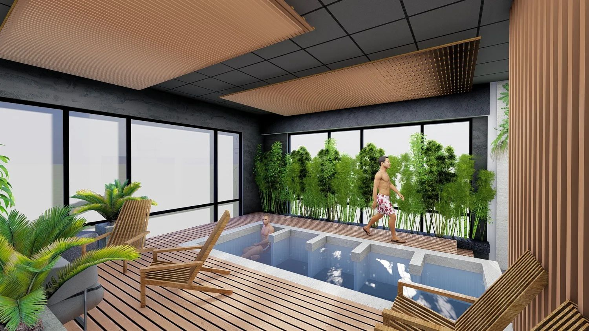
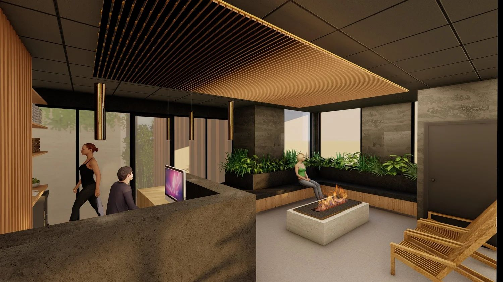
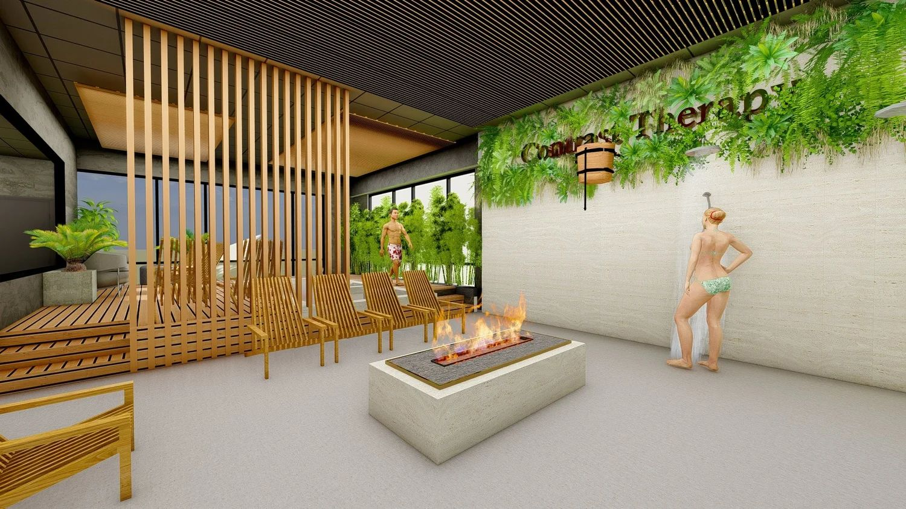
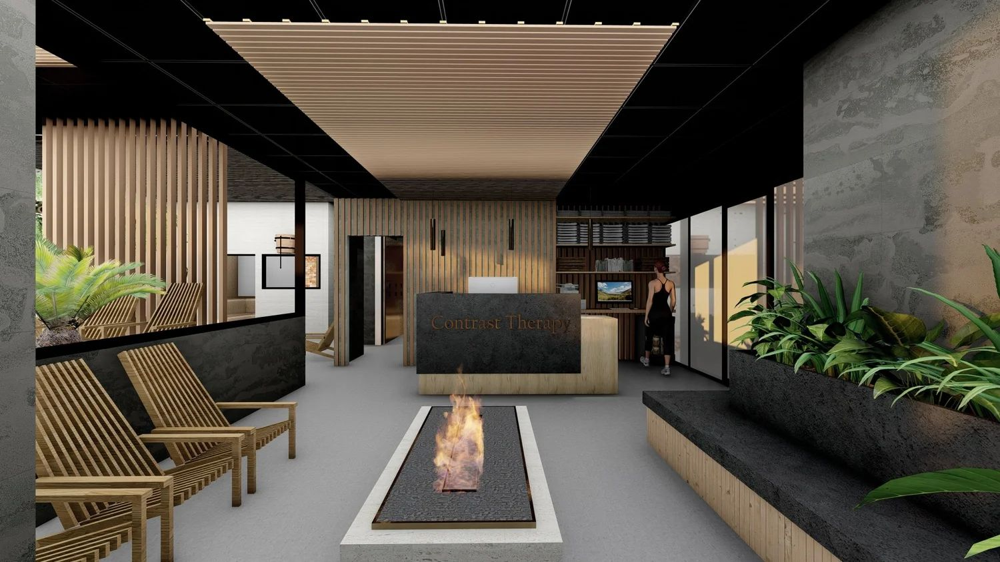
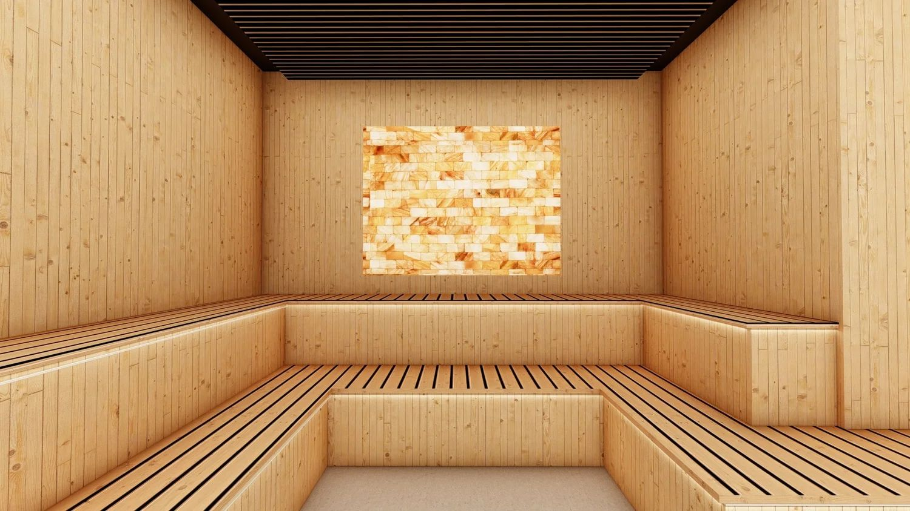
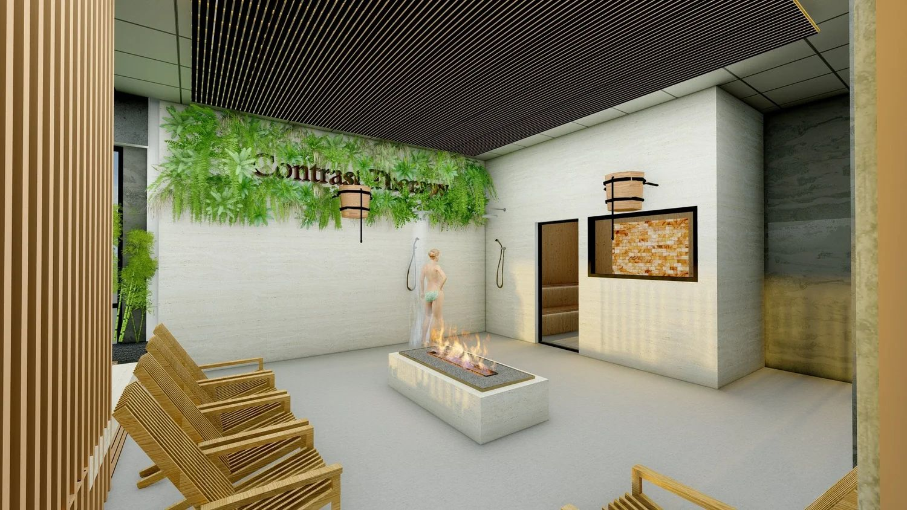

Contrast Therapy Cedar Hills
Contrast Therapy Spa of Highland UT, embraces simplicity and balance, creating a serene retreat for wellness and rejuvenation. The spa’s layout is thoughtfully organized to guide visitors through an immersive experience of warmth and coolness, with saunas and cold tubs positioned to encourage seamless transitions between the two. Clean, modern lines combine with natural materials like wood, stone, and concrete, fostering a sense of grounding and tranquility. Large windows and soft lighting create an interplay of light and shadow, enhancing the calming atmosphere.
The architectural details are inspired by the principles of contrast—warm textures juxtaposed with sleek, cool finishes echo the spa's therapeutic approach. Shared and private spaces are designed to be both functional and meditative, with subtle nods to Nordic design traditions.






